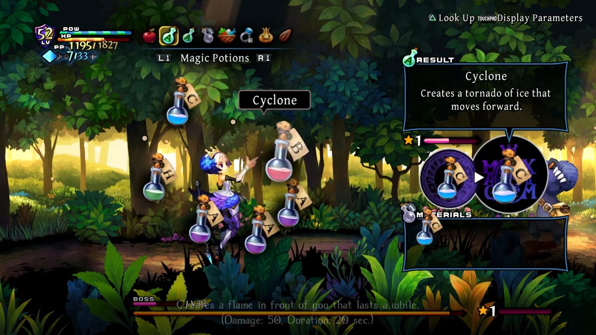
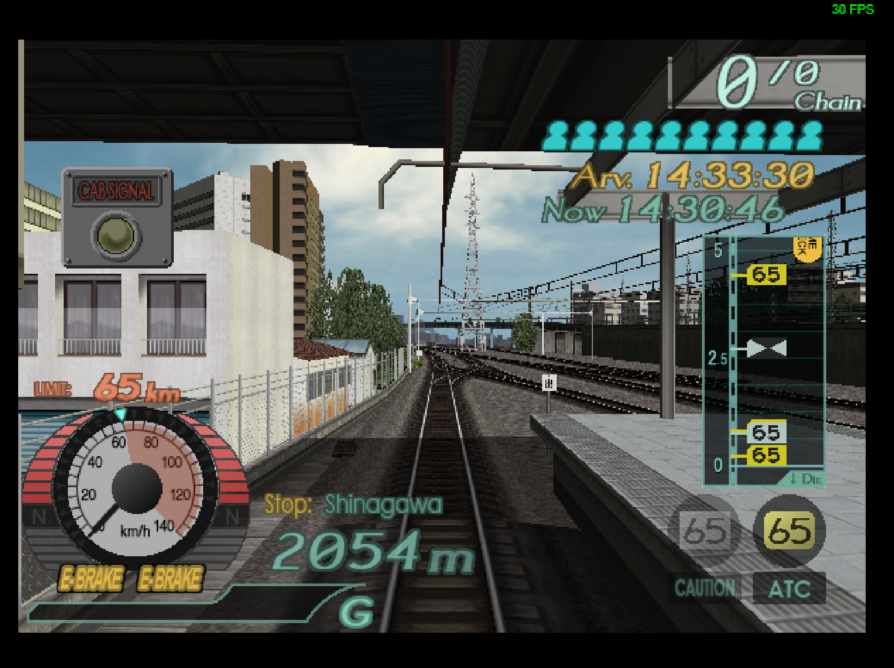
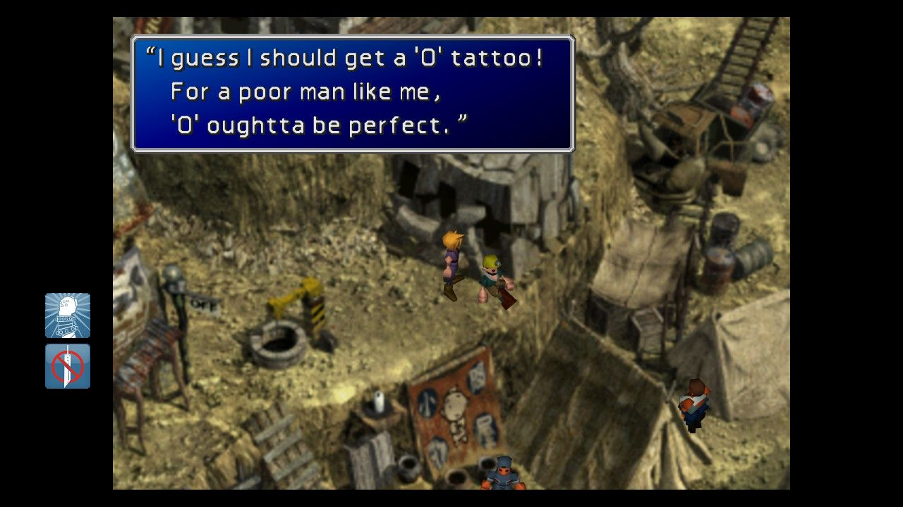
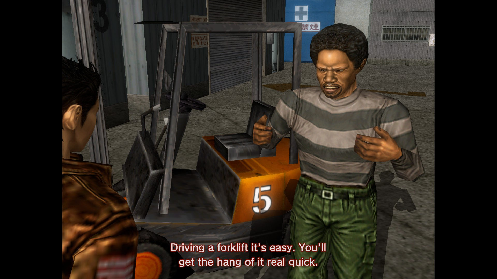

games.
a few older titles that have fostered new obsessions.
2025
Magic: The Gathering

MtG is the most fun I've had with any game in years. I'd resisted getting into Magic up until now having played and eventually written off many other physical and digital TCGs. The problem was always the same: deckbuilding with the limited cards you've pulled from boosters is fun, but playing those decks against optimized or meta decks is not very fun.
The thing that makes MtG in 2025 so special in this regard is that there are countless different ways to play that aren't the standard 1-on-1 competitive constructed format: There's a format where you open two randomized booster packs and shuffle them together to make a deck. There's a format where you play against three or more other people at once using sprawling 100 card decks, often creating massively complicated board states. There's a format where you curate your own limited pool of cards in order to play various other formats, more like a traditional board game. There's even a format where two players draw from the same deck of cards and try to outwit eachother. And there's literally hundreds more.
Magic as a game is so rich not just by itself as a designed product, but because the community continuously takes the game in bold new directions and makes it their own.
2024
Odin Sphere: Leifthrasir

Fast, fluid action RPG with a depth of combos from one button plus directional inputs. Pausing to choose special moves and potions feels a lot like FF7 Remake/Rebirth and was nearly 20 years ahead and in 2D, the only thing comparable that I know of was Kingdom Hearts which definitely doesn't feel nearly as good. The presentation of the art and atmosphere is absolutely breathtaking. It feels so good to play on nearly every single front. Some of the most appealing character designs I've ever seen, even the big ugly dudes. Didn't finish this one yet but hoping to come back to it. For everything I like about it, it definitely gave me a thumb injury from all the mashing required so I was forced to take a break!!
Under Night In-Birth II Sys: Celes

Easily my game of the year, though my reasons for that don't have all that much to do with the game itself. The changes from the previous versions would probably seem fairly marginal to the layman, but perhaps the most important component of new fighting game launches is a reignition of competitive play.
Though I've been a fan for quite a while, I never really spent the time to learn the game on a deeper level. That changed this year when I made a pact with my friend that we would start attending local tournaments ahead of our trip to Evo this summer, the largest fighting game tournament in North America that we had attended casually in previous years, and do our best to enter the bracket and not embarrass ourselves.
After months of getting thoroughly demolished at our locals and literally never winning a single game, Evo finally arrived and something miraculous happened. After sitting down to play my first match, a few minutes pass and I suddenly realize I'm actually winning. I ended up going 2-2, and my friends did similarly well in their respective games. It's hard to properly state how incredible that feeling was, and how much I exceeded my extremely humble goals going in. Truly a beautiful little personal victory that just made the high of spectating the tournament for the rest of the weekend that much better.
2023
Densha de Go! Final

For a long time I've had a vague awareness and fleeting interest in Densha de Go!, a long-running Japan-only series of arcade train sim games. When I visited Japan for the first time in Feb 2023, I was struck with how reliably I could spot a Densha de Go! machine in most arcades I visited, especially considering the age and very large footprint of the cabinets. I was a bit too intimidated to actually sit down to try it until my last day while killing time in Shibuya, waiting for a friend to finish up with one last round of crane games. My main impression from sitting there poking at the enormous lever controller was "Dang, this seems like it might be really fun if I only knew what was going on."
When I got home from my trip I found that the 2004 abandonware PC installment titled Densha de Go! Final had extremely recently received an English fan translation mod as of Dec 2022 which seemed truly serendipitous, an ideal starting point for learning how the game worked without futzing with the Google Translate app every step of the way.
This game immediately, and firmly, planted its hooks in me. It's definitely more of an arcade game than pure sim, but despite its mid-2000s era highly-aliased graphics it is just sim-y enough to trigger sensory memories riding the commuter trains around Tokyo, emulating popular real-life train routes complete with their famous station-specific omnichord-timbred jingles at each stop.
As far as actual gameplay, most of it boils down to waiting patiently for the announcer to complete their spiel and the cabin doors to close, accelerating and braking starting through various speed limit changes and time checks, then attempting to execute the perfect arrival at your next destination, which is what supplies the real thrill. Your aim is to brake gradually, smoothly, and confidently as you roll in to the station for a stop within mere centimeters of the target, without added acceleration or uncomfortable lurching, and of course precisely on time. It feels like the video game equivalent of the classic wooden ball game Shoot the Moon, where excitement and tension comes from the risk and reward of letting your ball (or train) go as far and as fast as you dare, attempting to pull it back to safety within a split-second, then either being handsomely rewarded with a great score or swiftly punished with absolute disaster.
It's totally addicting and I've played way too much of it within only a few days. I put in an impulse order of the 2021 edition Densha de Go!! Hashirou Yamanote-sen for Nintendo Switch, along with a rather extravagant arcade-style controller, but the PC version still has many many more hours of thrill to provide to me in the meantime.
Final Fantasy 7

I didn't own any Playstation consoles as a kid. As an adult I grew an aversion to JRPGs due to the tedious combat and grinding. But Final Fantasy iconography from growing up in the 90s has always been strong and appealing to my brain. The "idea" of Final Fantasy until this point was more attractive to me than the actual games. I had always been told "play them for the story" but to be honest, I was pretty skeptical that the story was even that good. I tried to get into Final Fantasy with IX a few years ago but ultimately fell off somewhere after the first disc as I wasn't feeling much propelling me forward, despite the look and sound of the game being extremely charming.
I picked up FF7 finally when I learned that the remastered version would allow me to blitz through basically all combat, turning the game into something more akin to a visual novel or old school adventure game. I also thought it might be easier for me to stick with and get into if I was streaming it on Discord to my friends. Turns out, FFVII is pretty darn fantastic!!
The prerendered visuals are so striking and beautiful and the story and characters are wonderful. The dialog is often hilarious and the cutscenes often heartbreaking. Every new location feels like a chapter in a book or an episode in TV series. Best of all, it's often delightfully absurd. There's so many wild ideas in here, they really threw the whole kitchen sink in.
Most of my exposure to what this game looked like was really the Midgar section. Towering steampunk structures, neon-lit slums, Cloud on a motorcycle, and our heroes overlooking a cliff once escaped. What I saw of the 2020 remake of this section of the game also did no favors to this perception.
As it would happen that is such a small fraction of what this game has to offer. The "ghost hotel", Mog House, and probably Gold Saucer as a whole is my favorite thing and is gonna be such so batshit to see rendered in beautiful lush 3D in the upcoming remakes. Also the music is truly remarkable even though I hear so much that is just a blatant ripoff of something else. As my old music theory professor used to say, great composers steal. I am already imagining myself vibing out to the soundtrack or longplays of this game on YouTube for years to come.
Great game, gripped me, was extremely hard to put down pretty much the whole way through. I feel inspired to try out more similarly famous JRPGs that I have missed, but I don't feel like I'll ever experience one quite like this ever again. Hope to be proven wrong though.
2022
Shenmue

This game has a major reputation, and unfortunately it's one of having aged very poorly. In some ways I agree, there is a lot that is very archaic about it, such as awkward controls, poor voice acting, and systems that require you to burn tons of in-game time without much to do while waiting for the next story beat.
But in other ways, I couldn't care less! I completely adored it. It has immense charm, and the things about it that may otherwise seem annoying through the lens of modern game sensibilities just endeared me to it more. I don't have much specific to note other than to ignore what others say and give it a try engaging with it for yourself by meeting it on its own level. Laugh at the voice acting, rotate some virtual gachapon, do some forklift racing, and let its slowest, most mundane moments soak through you. There's nothing quite like it and I loved every moment.
Also be sure to support and download Suka Pass, a fan project to recreate some online-only content and features from the original Dreamcast version of the game. Read the meticulous backstories of characters and locations, as well as mark off stuff on the map you have seen as you go. There's so much to dig into, and it's a marvel what great lengths the creators went to to try and simulate a small town's inhabitants in a way that had never been done before(and arguably has not been done since!).
Diablo II: Resurrected
I had never touched the Diablo series much until early 2022, but picking up Diablo II for the first time with this remaster completely blindsided me with how much I had been missing. I had played Diablo-likes before, as well as just a bit of Diablo 3, and found them to be mostly too "brain-off" for my enjoyment. Diablo II is still highly regarded for a reason as it turns out though, and it quickly showed itself to be one of the best games I've ever played.
It strikes a perfect balance between mindlessness and mindfulness. One moment you might be on metaphorical autopilot, stomping through small enemies and collecting their gold, while the next second unexpectedly caught off-guard and overwhelmed, suddenly fighting for your life on a razor's edge as you chug any health potions from your inventory you can scrounge up. The variety and atmosphere through randomly-generated maps keeps things fresh just enough for near-infinite replayability. It's very rare for me to finish a game and immediately want to start it again, but Diablo II has been one of those games.
I would not fault anyone for not wanting to buy this game given all the very public issues that Blizzard as a company has had around labor and sexual misconduct in recent years, but it is a very special game and a great remake, and one I think is worth the effort to find another way to experience if one was so inclined.
2021
SpaceChem
I'm writing this a couple years removed from actually playing it, but I was just talking to a friend about a different "pseudocoding" puzzle game and how disappointed I was in it, remembering I picked it up after playing SpaceChem for the first time and adoring it. It's by no means perfect, and Zachtronics has almost definitely improved on the formula since, but for programmers especially I think this one is extremely captivating.
SpaceChem for me delivers on the promise of presenting you with a fully complete system and rules, while giving you room to both brute-force and optimize your solutions as much as much or as little as you want. I never ended up finishing it because it got to be complex beyond my ability, and looking at other people's optimal solutions made me feel extremely dumb, but the time I did spend with it I could only describe as magical.